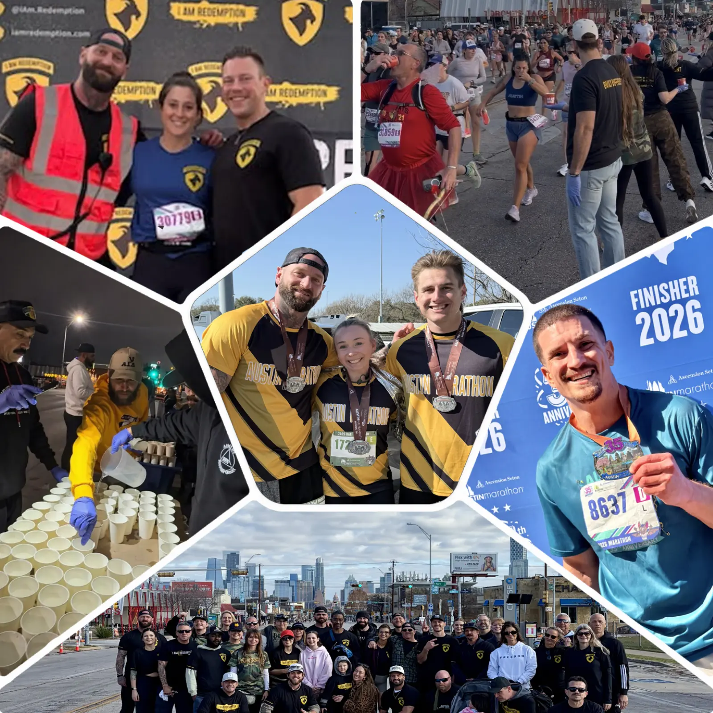
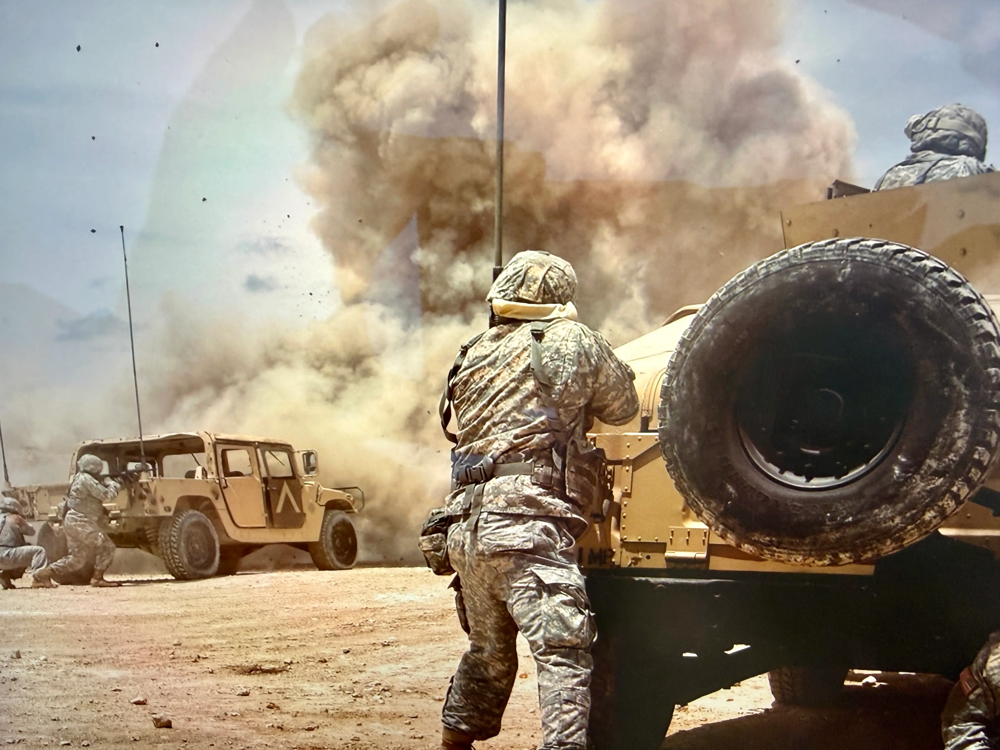

I Am Redemption x Austin Marathon
Community and Charity Partners.
We're honored to be returning as an official Charity and Community Partner of Ascension Seton Austin Marathon, Half Marathon, and 5K. The Austin Marathon selects organizations that are making a meaningful impact in our community and creating opportunities for runners to give every mile a greater purpose and we're proud to be part of that mission.
Whether you join Team IAR, volunteer at one of our aid stations, or make a donation, you're helping build a community where connection creates hope, hope inspires change, and lives are transformed. Together, nobody recovers alone.


Choose Your Team!
Aid Stations
Team IAR came through in 2026 and Austin Marathon noticed. Because of your incredible support, we're getting TWO aid stations in 2027, and they're right across the street from each other!
Volunteer registration is managed by the Austin Marathon. Let us know you're interested below, and we'll send the links as soon as they're released.
Run For Team IAR
Join Team I Am Redemption at the Austin Marathon, Half Marathon, or 5K.
Save 10% on any distance with code IAMREDEMPTION27.
Want to run for free?
Raise $500 or more, and we'll cover the cost of your race entry.
Create your Team I Am Redemption fundraising page below.
Want to train with IAR?
Marathon training begins in mid-August with weekly Sunday runs. Experience the Austin Marathon course with fully supported training runs, including aid stations along the route. Follow us on Instagram @iam.redemption for updates and the official kickoff.

Price of Redemption
Price of Redemption is a feature film about how one person’s fight for recovery impacts everyone around them. It shows what families, friends, and communities carry, and how healing becomes a shared process. It gives people a real look at what these battles feel like from every side. The people who love you feel the weight, the fear, and the hope right alongside you. Price of Redemption shows why support and belonging are essential and how they change the direction of a life. Helping people understand our mission and the movement behind it.
Currently in Post-Production